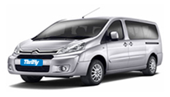

СТРАХОВКИ ПОКРЫТИЯ И ОТМЕНА ЛИЧНОГО УЧАСТИЯ
Страховая полиса (CDW/LDW & TP)
Данный вид страховки является обязательным и покрывают ущерб причиненный автомобилю за исключением франшизы(т.е личного участия), стоимость данной страховки зависит от категории автомобиля.
Личная ответственность(франшиза): Сумма франшизы зависит от категории автомобиля $475 - $960.
Данный вид страхования не покрывает повреждения, нанесенные шинам, колесам, стеклам, крыше, а так же ходовой части автомобиля.
Арендатор обязан выплатить полную сумму ущерба, нанесенного этим частям автомобиля.
Дополнительная страховка (Super CDW) не обязательная и снижает ответственность арендатора до Нуля в случае ущерба автомобилю.
Приобрести данный вид страхования возможно только в дополнение к базовому полису(CDW/LDW & TP).
Полная страховка(Super TP) не обязательная и снижает ответственность арендатора до Нуля в случае угона арендованнго автомобиля.
Приобрести данный вид страхования возможно только в дополнение к базовому полису (CDW/LDW & TP).
Страхование 3-его лица (3PLC - Limited Coverage) обязательно для клиентов, отказавшихся от полиса CDW/LDW & TP и имеют покрытие от кредитной компании.
Для приобретения данного полиса, арендатор обязан иметь при себе годную кредитную карту, например World Master Card из США или Канадскую Gold/Platinum Visa/Master Card либо Visa Premier с письменным подтверждением о покрытии кредитной компанией